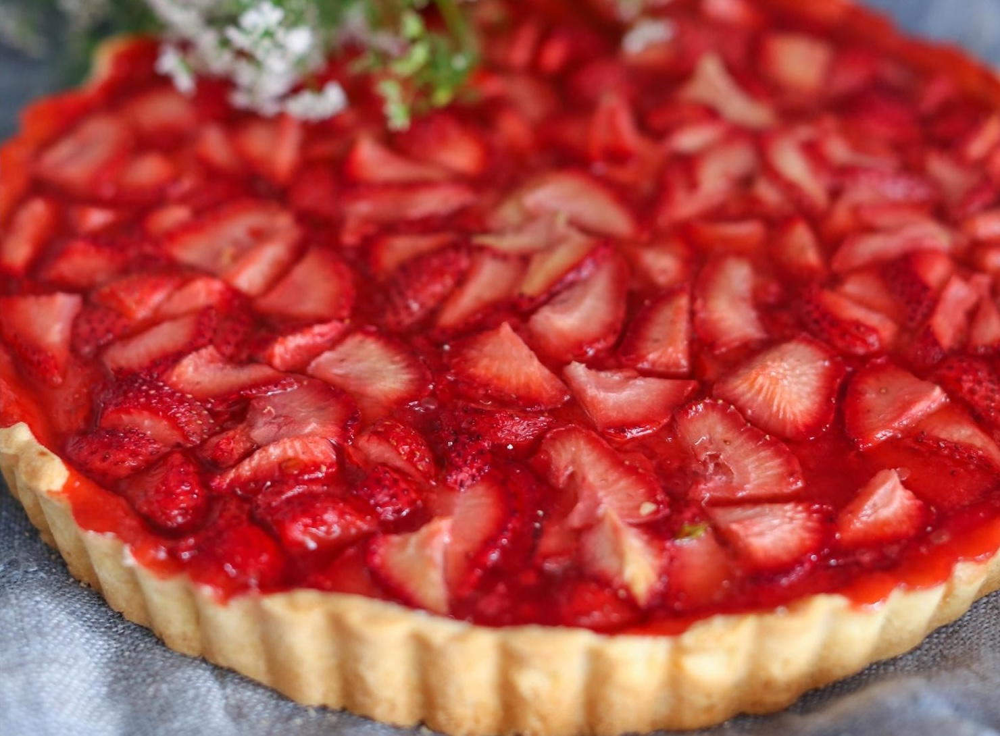

Лето всегда радует изобилием ягод, но клубника особенно дорога нашему сердцу как первая летняя ягода, и ее сезона мы всегда ждем с нетерпением. Да, клубнику в наши дни можно купить в супермаркете круглый год, но разве сравнятся «пластиковые» кислые и почти без запаха ягоды с великолепными грунтовыми, поспевшими на солнце, с бесподобным сладким вкусом и волшебным ароматом! В сезон, который длится с середины июня по середину июля, можно не просто лакомиться ягодами, дополнив их молоком, взбитыми сливками или ванильным мороженым, но и приготовить с клубникой много вкуснейших блюд — салаты, карпаччо и холодные супы, тарты и рулеты, сорбет, мусс, соус к сырникам или вареникам, варенье, джем, компот. Великолепный летний десерт — шоколадное фондю с клубникой. Кроме того, клубникой или клубничным соусом можно дополнять блюда из дичи, морепродуктов, сыры.
Существует небольшая путаница с названием ягод: клубника или земляника? С ботанической точки зрения клубника — лишь один подвид земляники, клубника мускусная, у которой мелкие округлые плоды. Но в обиходе закрепилась традиция называть земляникой мелкие и ароматные лесные ягоды, а клубникой — крупные садовые.
Выбор и хранение
В сезон клубнику лучше покупать на рынке, так больше гарантии, что она выросла поблизости и была собрана недавно. Ягоды должны быть целыми, глянцевыми, с выраженным ароматом. Сезонная спелая клубника имеет ровную красную окраску, без белого цвета, и чем насыщеннее красный оттенок, тем слаще будет ягода.
Клубнику лучше не хранить, а сразу есть или готовить, но при необходимости она может провести день в нижнем ящике для овощей холодильника. Только не нужно ее перед хранением мыть, иначе размякнет и быстро начнет портиться.
Если вы поддались порыву и купили много клубники, ее можно заморозить, сварить джем или варенье или просто перетереть с сахаром (в таком виде она может храниться в холодильнике несколько дней).
Как подготавливать
Перед использованием клубники в блюдах ее нужно аккуратно промыть, стараясь делать это под несильной струей проточной воды или погрузив в миску с водой, чтобы не помять нежные ягоды, затем дать обсохнуть на бумажных полотенцах и удалить чашелистики.
Несколько идей несложных блюд из клубники
Салат с клубникой: промыть и хорошо обсушить 200 г салатных листьев (айсберг, корн, латук, шпинат). Аккуратно промыть и обсушить 200 г клубники, разрезать ягоды вдоль на 4 части. Нарезать небольшими кубиками мякоть 1 авокадо, половинку сладкой красной луковицы нарезать тонкими полукольцами. Выложить на тарелки салатные листья, сверху разложить клубнику, авокадо и лук. Для заправки смешать 2 ст. л. оливкового масла и 1 ст. л. хорошего бальзамического уксуса, посолить, поперчить. Полить салат заправкой, посыпать 100 г раскрошенного козьего сыра и, по желанию, горстью жареных кедровых орешков.
Быстро маринованная клубника: выложить промытую и освобожденную от чашелистиков клубнику в миску (если она крупная, разрезать пополам или на четвертинки), присыпать сахаром (на 500 г ягод около 2 ст. л. сахара), сбрызнуть 2 ст. л. качественного бальзамического уксуса, перемешать и дать промариноваться в течение 1 часа при комнатной температуре.
Джем из клубники: разрезать на четвертинки ягоды клубники (1,5 кг), выложить в миску. Всыпать 400 г сахара, влить 70 мл лимонного сока (примерно из 2 лимонов). Перемешать и оставить на 1 час при комнатной температуре, чтобы клубника дала сок. Перелить ягоды вместе с соком в кастрюлю с толстым дном, по желанию добавить 3 ст. л. бальзамического уксуса. Довести до кипения на среднем огне, затем с помощью толкушки для картофеля или погружного блендера измельчить ягоды в практически однородное пюре. Варить на среднем огне, часто помешивая и снимая образующуюся пену, в течение 20 минут, затем убавить огонь до слабого и уваривать еще 40–60 минут, до густой консистенции. Проверить готовность можно так: налить ложечку джема в охлажденное в холодильнике блюдце. Если он не растекается, джем готов. Горячим разложить джем по стерилизованным баночкам и закрутить стерилизованными крышками для длительного хранения.
Клубничный уксус: разрезать на четвертинки ягоды клубники (300 г), выложить в миску из химически нейтрального материала (стеклянную или керамическую). Залить 300 мл яблочного уксуса и дать настояться при комнатной температуре около 2 часов. Перелить ягоды с уксусом в кастрюлю с толстым дном, всыпать 1–2 ст. л. сахара, довести до кипения, убавить огонь до слабого и варить 10 минут. Затем процедить жидкость через сито, охладить. Хранить уксус при комнатной температуре в темном месте и использовать в заправках для салатов и маринадах.
Рецепты от звёздных кулинаров
Запеченная клубника с сумахом от Йотама Оттоленги: выложить в миску 900 г густого натурального йогурта, всыпать 70 г сахарной пудры и 1/4 ч. л. соли. Перемешать и перелить в сито, выстеленное двойным слоем марли или муслином, и поместить на миску. Связать концы ткани, поместить сверху груз, например тяжелую миску, и убрать всю конструкцию в холодильник на 30 минут. Постараться отжать оставшуюся жидкость, развернуть ткань и переложить загустевший йогурт в миску. Вмешать 120 мл жирных сливок и 1 ч. л. тертой лимонной цедры. Убрать в холодильник до подачи. Разогреть духовку до 200 °C (392 °F) с конвекцией. Смешать 600 г обработанной клубники с 1,5 ст. л. сумаха, 2–3 веточками мяты, 1 стручком ванили (предварительно разрезать его пополам и выскрести семена) вместе с семенами, 70 г сахарной пудры и 80 мл воды. Переложить в форму для запекания 30×20 см. Запекать 20 минут, перемешав один раз в середине процесса, пока клубника не станет мягкой, а сироп не начнет булькать. Остудить до комнатной температуры, удалить мяту и ванильный стручок. Процедить сироп в кувшин. Влить 2 ст. л. сиропа в приготовленный йогуртовый крем и слегка, не сильно перемешать. Отлить 3 ст. л. сиропа для подачи (остальной сироп хранить в холодильнике и полить им, например, утреннюю гранолу). Для подачи разложить йогуртовый крем по мискам, сверху выложить клубнику, полить клубничным сиропом и украсить листочками мяты.
Клубника с «фромаж блан» от Найджела Слейтера: поместить большую миску в холодильник и остудить. Влить в холодную миску 150 мл холодных жирных сливок и взбить до мягких пиков. Аккуратно вмешать 100 мл густого натурального йогурта. Взбить 1 крупный яичный белок до плотных пиков и осторожно вмешать в смесь сливок и йогурта, чтобы она осталась воздушной. Попробовать и по желанию подсластить сахарной пудрой (около 1 ст. л. без горки). Охладить в холодильнике и подавать не позже чем в течение часа.
Смузи с замороженной клубникой от Джейми Оливера: очистить и нарезать спелый банан, выложить в чашу блендера. Добавить 1 стакан замороженной клубники и 2 ст. л. с горкой натурального йогурта, взбить до однородности. Всыпать небольшую горсть овсяных хлопьев и небольшую горсть любых орехов (например кешью). Влить 1 стакан молока или яблочного сока, по желанию добавить 1 ч. л. меда. Вновь взбить все до однородности; если смузи получился густым, слегка развести его молоком или соком и сразу подавать.